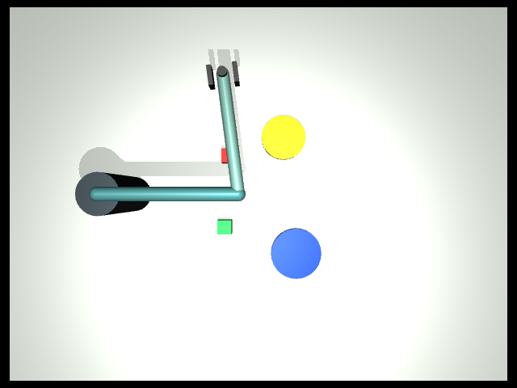
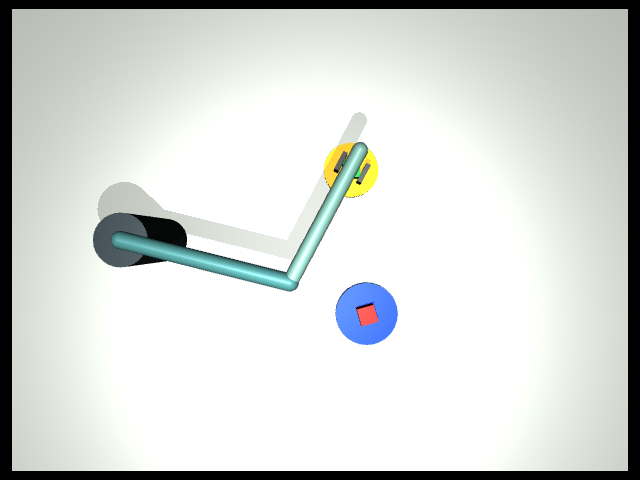

现在把前面的几个部件接成一个完整任务：同一台机械臂把红色方块送到蓝色区域，再把绿色方块送到黄色区域；过程中能够应对一次抓空或目标移动，并正确处理重复任务。
这里的“完整”指这一明确任务的闭环。实验实际使用同一个 MuJoCo 世界里的两个自由物体和两个目标，不是把单物体实验分别运行两次再拼接结果。决策由确定性规则驱动，观察来自仿真状态，抓取仍采用显式附着约束。
本章目标与交付物
完成三个条件下的双物体整理：无扰动、一次抓空、一次目标移动。你需要提交任务定义、事件日志、完成记忆与最终验收；具备渲染环境时，再保存前后图。程序产生的数据比一张好看的截图更重要。
前置要求是理解任务记忆、技能结果与任务结果的区别，以及第 15 章的对照方法。第 13 章程序解释器和第 14 章学习技能为独立实验，本毕业项目没有调用它们，也没有接入 VLA、在线语言模型或视觉动作闭环。
第一步：先写可验收的任务规格
| 任务标识 | 操作对象 | 目标区域 | 最终要求 |
|---|---|---|---|
red_to_blue |
红色方块 | 蓝色区域 | 已释放，并满足位置、高度与速度条件 |
green_to_yellow |
绿色方块 | 黄色区域 | 已释放，并满足位置、高度与速度条件 |
调度队列实际是“红、绿、红”。最后一个红色任务用于检查重复请求处理，不代表场景里还有第三个方块。第一次完成红色任务时保存证据；再次收到它时，先复核红块现在是否仍满足条件，成立才跳过。
一个对象的成功不能代替整个任务成功。最终必须同时满足两个对象的验收。只检查当前活动对象，会出现“最后操作的那个做好了，因此宣布全部完成”的错误。
第二步：理解系统如何衔接
本项目由四层协作。调度器按队列选择活动对象；反馈控制器根据其当前状态选择接近、抓取、运输或释放；基础技能实际推进物理仿真；任务记忆只在验收通过后记录完成证据。
切换活动对象改变的是工具接口查询哪一个对象，并没有重新创建场景。搬运绿色方块时，已经放好的红块仍然存在。若当前任务没有完成，调度器会停止，避免仍持有一个物体时直接开始操作另一个。
记忆也不会代替当前状态。memory.json 中的完成记录表示某个时刻的事实；revalidate_completion 事件说明重复请求到来时又进行了一次检查。如果对象后来离开目标，旧记录应失效，不能继续用“以前成功过”作为理由跳过。
第三步：运行无扰动的完整任务
在已激活环境、包含 lab/ 的目录执行：
python lab/advanced.py capstone --seed 7 --perturb none --out runs/ch16-clean
python -m json.tool runs/ch16-clean/summary.json
python -m json.tool runs/ch16-clean/memory.json
检查 completed_ids 是否包含两项任务，以及 skipped_duplicates 是否为 1。然后阅读事件日志：确认先搬运红块，再搬运绿块，重复红色请求没有产生一整段重复搬运。
final_observation.objects.red 与 .green 分别记录两物体的状态。active_object 只是当前查询对象；兼容前面章节的 scene.block_xyz 也只指向当前对象。要判断全部完成，请查看 task.all_success 和摘要的 success，不要只读取 task.success。
第四步：加入一次真实执行中的故障
python lab/advanced.py capstone --seed 7 --perturb miss-grasp --out runs/ch16-miss
python lab/advanced.py capstone --seed 7 --perturb shift-goal --out runs/ch16-shift
抓空条件在第一次满足抓取前置条件时注入失败，反馈控制器重新观察后再次尝试。目标移动条件在首次抓取成功后，将当前目标移到新位置；后续运输需要使用新位置。这两种扰动分别运行，不表示同一回合同时出现全部故障。
发布前 seed 7 的抓空实跑完成了两项任务，执行 16 次工具调用，重复请求跳过 1 次。你需要在自己的日志中找到第一次失败、第二次抓取成功、两个任务完成与重复任务复核的证据，不能仅照抄这个数字。
目标移动时，既要检查被移动目标对应的物体，又要确认另一个物体最终没有被破坏。这个要求比单物体任务多了一层：某个子任务刚完成，不保证其他已完成条件永远保持成立。
第五步：用独立计算复核两个对象
把下面的程序保存为 check_capstone.py，再运行 python check_capstone.py。同样适用于 PowerShell，不需要 heredoc。它以抓空目录为例，检查其他回合时修改 folder。
import json
import math
from pathlib import Path
folder = Path("runs/ch16-miss")
summary = json.loads((folder / "summary.json").read_text())
memory = json.loads((folder / "memory.json").read_text())
checks = []
for name in ("red", "green"):
state = summary["final_observation"]["objects"][name]
distance = math.dist(state["block_xyz"][:2], state["goal_xyz"][:2])
valid = (
not state["holding"]
and distance < 0.045
and 0.015 < state["block_xyz"][2] < 0.065
and state["linear_speed_m_s"] < 0.05
)
print(name, "水平距离：", distance, "复算成功：", valid)
assert valid == state["success"]
checks.append(valid)
assert summary["success"] == all(checks)
assert all(checks), "至少一个对象未完成"
assert set(memory["completed"]) == {"red_to_blue", "green_to_yellow"}
assert summary["skipped_duplicates"] == 1
assert summary["model_calls"] == 0
print("两个对象均通过当前状态验收，完成记忆与重复任务处理一致。")
这段计算独立于控制器的完成宣告，但输入仍是同一个仿真器提供的状态；它不是外部真实传感器验证。位置、释放与速度条件共同构成当前教学规格，换成新的形状或实际夹爪时需要重新定义。
第六步：用图像帮助解释，而不是替代验收
若第 2 章 doctor 的渲染检查正常，可在新目录运行：
python lab/advanced.py capstone --seed 7 --perturb miss-grasp --render --out runs/ch16-render
这会额外保存 capstone-before.png 与 capstone-after.png，不会录制连续视频。没有可用渲染环境时，先完成不带 --render 的物理与日志实验。
下图来自本课程 seed 7、miss-grasp 条件的真实运行。前后图用于观察场景与大致位置，不能展示全部失败和恢复时刻。


最终图中的绿色方块部分被机械臂遮挡。仅凭画面无法完整判断它是否释放、是否低速稳定；请对照 objects.green 的状态和前面的复算结果。这正是将可视化与验收证据分开的原因。
失败时怎样定位到具体层
没有开始搬运，先检查场景加载与活动对象；到达后抓空，检查技能结果与持物状态；运到旧目标，检查获取位置的时机；跳过了未完成任务，检查记忆是否经过当前状态复核；单个物体成功却整体失败，检查另一个对象。
不要一看到失败就扩大重试次数。不可达目标、错误对象映射和已经过期的任务规格，需要不同处理。当前反馈控制每个子任务有有限动作预算，但没有解决任意障碍、任意移动目标或物体堆叠。
毕业报告与下一次改进
报告包含任务规格、运行命令、种子与版本、三组日志、逐对象验收、恢复事件和已知限制。成功条件应在查看结果前确定；失败回合也必须保留。完成后，用一段话解释系统为什么知道何时继续、何时跳过、何时结束。
基础扩展：用新种子重复三个条件，按第 15 章方法报告全部结果。进阶扩展三选一：让场景产生需要刷新记忆的新变化；将受控视觉位置接到实际动作并记录误差；为学习型技能增加固定权重加载和上层调用。每次只改变一项，并为新增路径建立验收，不能仅新增接口名称就宣称集成完成。
阅读 SO101 三色积木分拣案例，比较它的视觉与几何控制路径和本项目的精确状态输入；再看 RPent 技能分工案例，思考下一项能力应该放在哪一层。案例是延伸阅读，本课程没有复现其完整机器人与学习模型。
一手参考
- MuJoCo 模型与约束定义：理解同场景物体、关节与附着约束。
- PyRUA-Lean：程序、动作结果与后续决策
- OpenVLA 原项目：进一步研究视觉语言动作模型时，回到其实际输入、训练与部署条件。